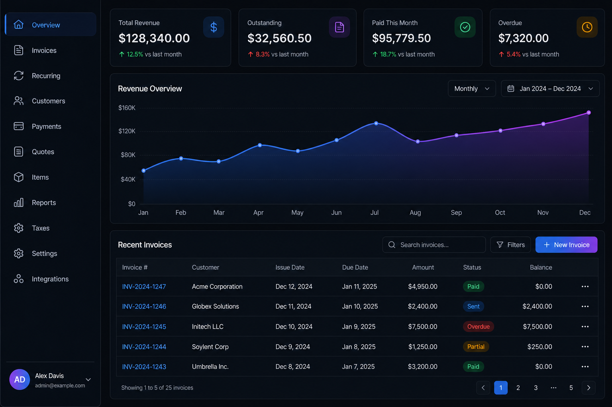
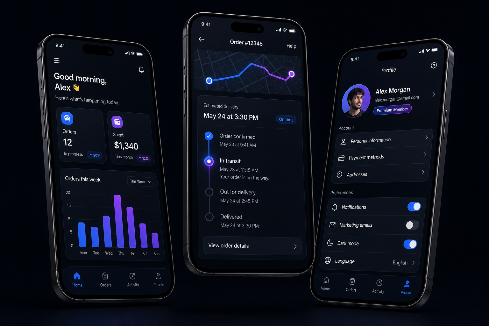

Systems engineering proposal · Prepared for Lynks
A three-month engineering engagement to map, architect and build the operational backbone behind Lynks' US, UK and UAE purchasing pipeline — so every order, duty calculation and shipment runs through software instead of spreadsheets and judgement calls.
01 — Executive summary
Lynks has already solved the hard commercial problem: getting products people want from three foreign markets into Egyptian customers' hands at a price that works. What typically limits a business at this stage is not demand — it is how much of the operation still depends on manual coordination that cannot scale, and cannot be measured.
A three-month engagement in three stages: audit and architect the full order lifecycle, build the highest-value module to production, then integrate and hand over with documentation your own team can run.
Month one is a decision gate. If the blueprint does not convince you, the engagement ends there and every deliverable stays yours. Continuation beyond month three is earned on performance, never assumed.
Everything. Code lands in your repository from the first commit, on a mainstream stack, fully documented. No licences, no lock-in, no dependency on us to keep running.
02 — Who we are
We are a product engineering studio working with companies that have outgrown their first set of tools. Our work sits where design, engineering and operations meet: customer-facing platforms, the internal systems that keep them honest, and the integrations that connect them to everything else. We are small, senior and deliberately hands-on — the people who scope your work are the people who build it.
Web, mobile, APIs, databases and deployment under one team
We build the admin and reporting layer, not just the pretty front end
Many brands or markets on one platform, cleanly isolated
Production experience with USD/EGP pricing and staged revenue recognition
Documented, tested and transferable to your team by design
03 — What we do
Customer-facing applications built for conversion and speed — booking flows, catalogues, checkout, account areas — with the design work handled in-house rather than subcontracted.
Customer and operations apps sharing one API and one design language, so the phone experience and the desktop experience never drift apart.
Making separate tools behave as one system: payment providers, carriers, merchant catalogues, accounting, internal databases. This is the core of what we propose here.
Removing repetitive human steps — classification, matching, reconciliation, alerting — where the rules are clear enough to encode and the volume makes it worth doing.
One platform serving many isolated tenants — separate brands, markets, franchises or partner accounts running on shared infrastructure while their data, permissions, branding and reporting stay cleanly separated. Built in from the schema upward, because retrofitting tenant isolation into a single-tenant system later is one of the most expensive rewrites a company can face. Directly relevant to Lynks if you intend to run distinct storefronts per market, spin up a Saudi or Gulf operation on the same platform, or open it to partners without duplicating the stack each time.
04 — Selected work
Three of these are live and you can open them during our meeting. The others are private client systems shown as representative interface work.
A booking and trip-management platform for an Egyptian tourism operator: itinerary construction, availability, customer records and reservation handling in one system.
A veterinary practice platform covering appointments, animal medical records and client communication — a domain where data structure and history matter more than styling.
A two-sided marketplace connecting Egyptian home chefs with customers: chef storefronts, menu management, ordering and fulfilment. The closest analogue to Lynks in our portfolio — many independent suppliers, one order flow, one delivery promise.


05 — What we see at Lynks
A single Lynks order is not one transaction. It is a chain of them across merchants, borders, currencies, carriers and customs — each step capable of failing independently, and each one carrying margin. Below is how we read that chain from the outside. Correcting and completing this picture is the first thing we would do together.
Amber stages are where, in our experience with this business model, margin and customer trust are most often lost — because they depend on estimates made before the true cost is known, or on a human correctly matching one thing to another.
One service that computes the true final price — item, shipping weight and volume, duty category, VAT, FX spread and margin — and quotes it at checkout. Every cent of under-quoting is taken directly out of your margin; every cent of over-quoting loses the sale.
A single state machine per order, spanning procurement through last mile, so that anything stuck is visible by definition rather than discovered when a customer complains.
Automated reconciliation of inbound parcels at your hubs against expected purchases, with an exception queue for what genuinely needs a human. This is usually the single largest consumer of operations time in this model.
Per-order profitability after real shipping, real duty and real FX — not averages. You cannot price confidently against a blended number, and you cannot spot a loss-making product category without this.
Proactive tracking and notification across carriers. Most "where is my order" contacts are a reporting failure rather than a logistics one, and they scale linearly with volume unless removed.
Price and availability drift at source is a silent margin leak. Detecting change between quote and purchase protects the promise you made at checkout.
We are deliberately not claiming to know which of these hurts most today — that is what week one is for. We would commit to a build order with you at the end of month one, based on evidence from your own data rather than our assumptions.
06 — How the three months work
Three months is long enough to deliver working software that is genuinely in production. It is not long enough to rebuild an entire operation, and any proposal claiming otherwise is selling you a schedule it cannot keep. So we sequence deliberately: understand first, build the thing with the highest return second, and make sure it outlives us third.
Decision gate
We map your current stack and the real order lifecycle end to end, sit with the operations team to see where time actually goes, and instrument where margin leaks. You receive a written architecture blueprint, an integration plan, and a backlog ranked by return rather than by ease.
If the blueprint does not convince you, the engagement ends here and the documents remain yours to use or to hand to anyone else.
We build the highest-return item from the agreed backlog to production standard — most likely the landed-cost engine or order orchestration core, decided on evidence in month one. Working software in a staging environment you can use, not a prototype.
We connect the module to your live systems, put an operations dashboard in front of it so the team can run it without engineering help, and transfer ownership properly: documentation, walkthroughs and a written path for what comes next.
Optional
The three months stand on their own and end cleanly. If the work proves our ability and you want us to keep going, we agree the next scope and terms at that point — based on what you have actually seen us deliver rather than on what we promised at the start. There is no automatic renewal, no rolling commitment and no obligation in either direction.
07 — Terms of engagement
You will notice there are no numbers in this document. That is deliberate. We would rather agree what is actually worth building first, and talk about investment once we both understand the scope — quoting before that conversation is guesswork dressed as precision. The terms below are the ones that matter regardless of what the figure turns out to be.
All source code, documentation and designs are owned by Lynks, delivered into your repository and your infrastructure as the work is produced.
Either party may end the engagement at the close of any month with written notice. No termination penalty. You keep everything delivered.
Handled as written change requests with the schedule impact stated before work starts. Nothing gets added silently and nothing arrives as a surprise.
The agreement ends at month three by default. Continued work — at a scope agreed then, on the strength of what we delivered — is entirely optional for both sides. Nothing renews automatically.
This document sets out scope and approach, not a legal contract. Once we have agreed what we are building, we would issue a short services agreement covering these terms plus confidentiality and data handling, which we recommend your counsel reviews.
08 — How we work
Working software every week. If there is nothing to show, we say so and explain why.
Commits land in your GitHub from day one. Review anything, any time.
You talk to the engineers doing the work, not an account manager relaying messages.
Architectural choices are documented with their trade-offs, so future teams know why.
09 — Next steps
A working session with your operations and engineering leads to pressure-test the lifecycle map in section 05. No charge, no commitment.
We name the candidate we would build in month two and you tell us whether it matches where the pain actually is.
With the scope settled we agree terms, sign a short services agreement and take repository access. Blueprint delivered four weeks later.
For Lynks
For Digi-Tech